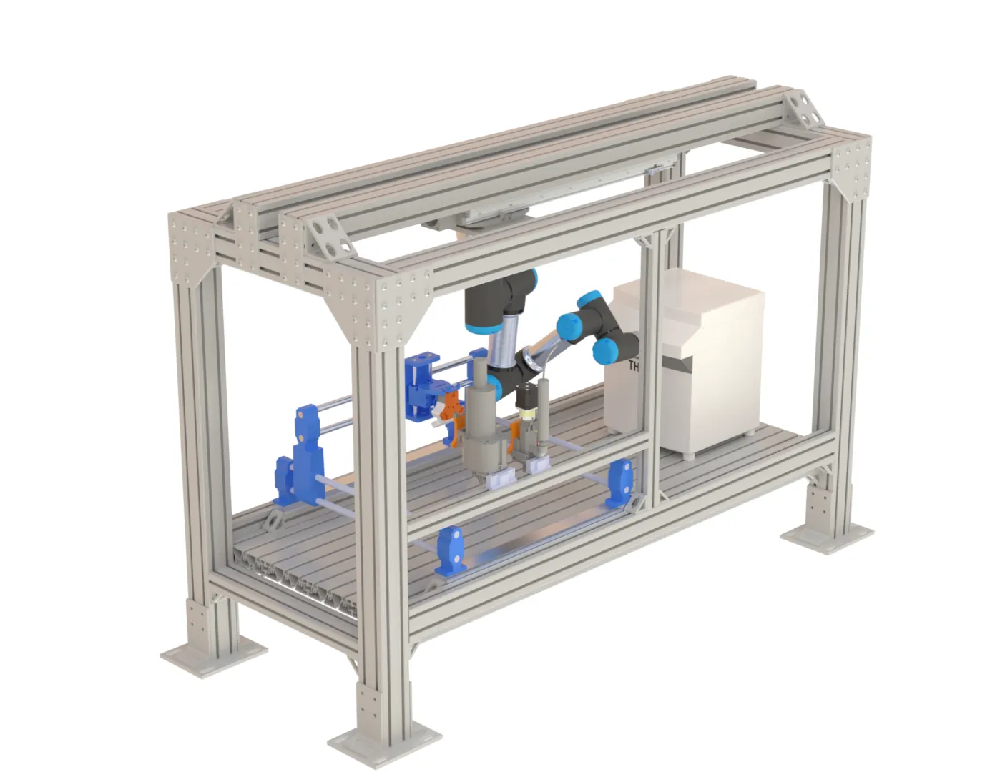

Laboratory configurator
Configure a self-driving laboratory, one instrument at a time.
Labu is a catalogue and design tool for research groups that want to automate. Compare dispensers, robot arms, integrated platforms and open-source software side by side, with published specifications and the papers behind them. Lay the cell out in 3D, check that it covers every step, then source each part directly from its maker.

One cell, every unit operation: from hardware to autonomy.
Every step required to build a self-driving lab—from physical hardware assembly and digital twins to data collection, machine learning, AI agents, and verification safety—modelled in 3D straight from the review paper.
From an empty room to a running loop.
Four steps in one workspace. Nothing asks you to commit to a vendor until you choose to contact one.
- 2.1 · Explore
Find the parts
Dispensers, arms, platforms, workstations and software, with published prices, accuracy and the reference behind each number.
Parts library - 2.2 · Design
Lay out the cell
Drag parts into a 3D workstation. Pipettes fill plates, arms replay planned transfers and feeders dose while you arrange them.
New design - 2.3 · Automate
Make it self-driving
Check every step is covered, choose an orchestration system, rehearse in a twin, and pick the optimizer or agents that decide the next run.
Self-driving layer - 2.4 · Source
Contact each maker
Your cart splits by provider. Each group links to the maker's own page to order, request a quote or download the software.
Your cart
Rheology decides the hardware.
Viscosity, yield stress and powder flowability set the dispensing mechanism (Table 1 of the review).
Hardware is half a lab. The loop is the other half.
Vendor configurators stop at the bill of materials. Labu continues to the software that lets a cell decide for itself, organized by the layers of a self-driving lab.
- L4DecideAgents →
Bayesian optimizers and AI agents with human checkpoints - L3Orchestrate8 systems compared →
Workflows, scheduling, resources and alerts - L2IntegrateDrivers →
SiLA 2, PyLabRobot, MCP device servers - TWINRehearseFidelity ladder →
From discrete-event models to GPU physics
One catalogue, every maker.
Instruments, industrial structure and open-source software side by side. Parts tagged 3D drop straight into a design.
Start from a cell that already works.
We help you choose. The makers sell.
A lab is assembled from many companies and research groups. Labu stays neutral: no stock, no markup, no preferred brand.
- The cart splits by providerEach maker or group gets its own block with parts, quantities and published prices.
- One link per providerOpen the maker's own page to order, request a quote, or download the code.
- Research tools are creditedLab-built devices and published software link to the group that made them.
- Take the design with youShare links, CSV parts lists with 3D positions, and a cart that persists across visits.

Every number is cited.
The catalogue grew out of a review from the Acceleration Consortium at the University of Toronto: 8 authors, 178 references and 7 comparison tables on handling liquids, pastes, powders and objects. Prices, accuracies and comparisons link back to their source.
Your next experiment starts with a layout.
Open the design tool, drop in a liquid handler and an arm, and let the cell check itself.